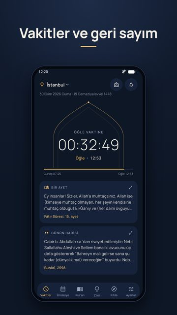
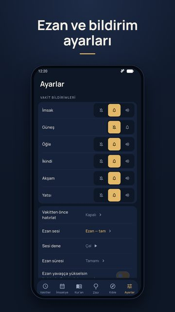

Namaz & Zikir’i yayından önce deneyin
Reklamsız, az izinli, internetsiz namaz vakti, ezan ve zikir uygulaması
Uygulama Google Play’e çıkmadan önce Google, gerçek telefonlarda en az 12 kişinin 14 gün boyunca test etmesini istiyor. Siz de test kullanıcısı olursanız uygulama herkese daha erken ulaşır; bulduğunuz hatalar yayından önce düzeltilir.


3 adımda katılın
Android telefonunuzda Play Store’da kullandığınız Gmail hesabıyla yapın. Bilgisayardan katılırsanız da aynı hesabı kullanın.
Açılan sayfada “Gruba katıl” düğmesine dokunun. Grup üyelerini yalnız geliştirici görür; size e-posta gönderilmez.
Gruba katılAçılan sayfada “Test kullanıcısı ol” düğmesine dokunun. Sayfa hata verirse birkaç dakika bekleyip yeniden açın.
Test kullanıcısı olMağaza sayfası açılmazsa 2. adımdaki sayfanın altındaki “Google Play’den indirin” bağlantısını kullanın.
Play Store’da açSizden ricamız
- 14 gün boyunca uygulamayı silmeyin ve testten ayrılmayın. Sayı 12’nin altına düşerse süre baştan başlar.
- Ezan vaktinde bildirim ve ezan sesi geldi mi, bakın. Gelmediyse lütfen bildirin; en önemli test bu.
- Görüşünüzü uygulamadaki Ayarlar → Geri bildirim bölümünden ya da pd.ozkanfurkan@gmail.com adresine yazın.
Sık sorulanlar
Ücretli mi? Hayır. Uygulamada reklam da yok. İsteğe bağlı bir “Destek ol” bölümü var; test sürümünde ödeme yapmanız gerekmez.
Hangi bilgilerimi görüyorsunuz? Test listesinde yalnız Gmail adresiniz görünür. Uygulama hesap istemez, analitik ve reklam kimliği kullanmaz. Ayrıntı: Gizlilik politikası.
iPhone’da çalışır mı? Şimdilik yalnız Android.
Testten nasıl çıkarım? 2. adımdaki sayfada “Programdan ayrıl” bağlantısı var. Lütfen 14 gün dolmadan ayrılmayın.